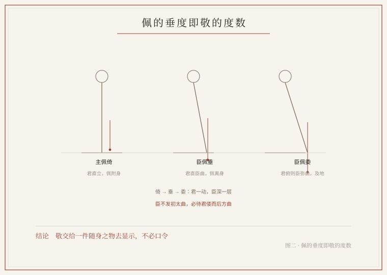

曲礼下 · 二·五 · 第 128 课
直立之时，身偻如磬之背，佩自两边垂前。君佩贴身，臣佩垂；君佩垂，臣佩委地。这是君臣俯仰的联动。
说什么事：立则磬折垂佩。主佩倚则臣佩垂，主佩垂则臣佩委。
落在哪一层：仪，兼及礼意。佩是尺度，身是读法。
为何编在此位：前四节讲的都是手上、足上；此节转到身上——一个人站在那里的整个角度。
【经】立則磬折垂佩。主佩倚則臣佩垂，主佩垂則臣佩委。
【注】君臣俛仰之節。倚，謂附於身。小俛則垂，大俛則委於地。
【疏】……立，倚也。佩谓玉佩也，带佩於两边。臣则身宜偻折，如磬之背，故云「磬折」也。身既偻折，则所著之佩从两边，出县垂於前也。「主佩倚」者，主谓君也。倚犹附也。君宜直立，则佩直附倚身，而县垂不出前。「则臣佩垂」者，君若直立，佩倚於身，则臣宜曲折，曲折则佩不得倚身，故县垂於前也。「主佩垂，则臣佩委」者，主，君也。言君若重慎折身而佩垂，则臣弥曲，故佩历委於地。然臣不发初太曲，必待君偻而后方曲者，亦授立不跪之义也。
磬折 疏「身宜偻折，如磬之背」。磬为折角之器，取其角度，不取其形。
垂佩 玉佩自两边垂向前，不贴身。
主佩倚 注「倚，谓附於身」。君直立，佩贴着身体，不晃出前。
臣佩垂 君直而臣曲，臣身一折，佩便离身垂前。
佩委 注「大俛则委於地」。委者，落也，垂到地。
不发初太曲 疏语。臣不抢先深躬，必待君先俯而后随之。
站立时，身子微偻如磬的折角，玉佩垂在身前。君佩贴身，臣佩便垂出；君佩垂出，臣佩便垂到地。
礼把「敬」交给了一件随身的饰物去显示。君站得直，佩贴身；臣便折身，佩垂前。君若也折身，臣便更深，佩及地。一个动作，由佩的垂度读出层级——不必口令，不必眼神。
第一层 佩是可读的尺度 玉无故不撤，佩常在身。以常在之物为尺度，敬就成了随时可验的状态，而非临时的表演。
第二层 三级联动 倚、垂、委，是三级而非两级。君的动作一变，臣的动作必须再深一层——礼是相对运动，不是绝对姿势。
第三层 臣不先曲 疏「必待君偻而后方曲」。敬也有时序：抢着敬，是另一种失礼。此处与「不顾望而对」正相表里。
第四层 磬折是几何 磬之背有角。礼的姿态被说成一个角度，说明古人已在用几何描述身体。角度可学，可传，可校。
与今日何干 会面时身体前倾的度数仍在传递层级。谁先倾，倾多少，仍是同一套无声的语言——只是我们不再有佩来显示它。
| 左 | 右 |
|---|---|
| 立则磬折 | 身偻如磬之背，取角度 |
| 垂佩 | 佩自两边垂前 |
| 主佩倚 | 君直立，佩附身 |
| 臣佩垂 | 君直臣曲，佩离身 |
| 主佩垂则臣佩委 | 君俯则臣弥曲，佩及地 |
| 臣不发初太曲 | 敬有时序，不抢先 |
画三个人形侧影，自左至右并立，皆无面容：最左一人身直、腰间玉佩紧贴身体垂下；中间一人身微折、佩自腰间垂出一道前倾的弧线，离身而未及地；最右一人身折更深、佩已垂至脚边。三人之间各画一道极淡的竖直基准线，示意同一站位。地面一条横线。不写文字。赭色只用在三人的玉佩上。
